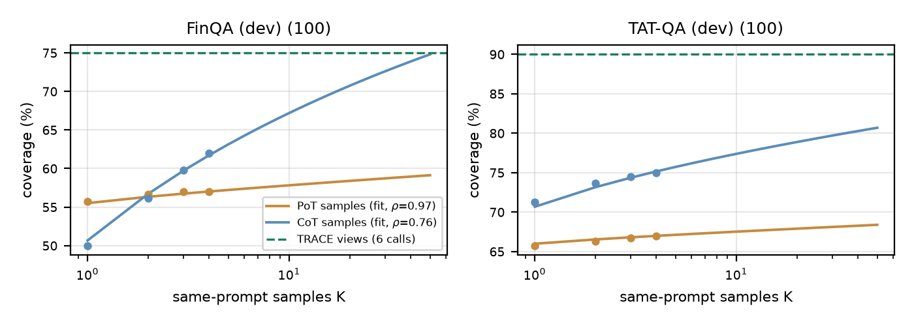
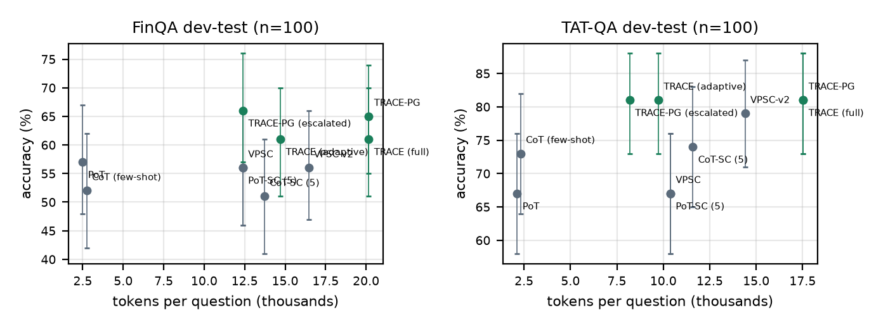

Index Terms—financial question answering, numerical reasoning, program verification, neuro-symbolic reasoning, self-consistency, conformal prediction, small language models
I. INTRODUCTION
Analysts routinely ask numerical questions of annual reports: how fast did revenue grow, what was the operating margin, what share of total assets is held as cash. To answer one, a system has to find the right cells, read each with the correct period, unit and sign, and then apply the correct formula. On FinQA [1], the original fine-tuned system reached 61% execution accuracy, while financial experts reached 91%. When the documents are confidential, small open models that run locally are the natural choice, and they are also the least reliable.
Program-of-Thought (PoT) [2, 3] removes arithmetic mistakes by having the model write code, and self-consistency [4] votes over several sampled solutions. In our earlier work [5] we added a grounding filter on top (VPSC), which discards sampled programs whose numbers do not appear in the report before voting. The filter was precise, in that every question it flagged was indeed answered wrongly, but it did not change a single answer. In this paper we explain that failure quantitatively and design a method around the explanation.
Diagnosis. Accuracy can be written as coverage, meaning whether the correct answer appears among the candidates at all, minus a selection gap (§). For a small model, samples drawn from the same prompt are close to copies of one another. A beta-binomial fit gives an intra-question error correlation of 0.97 for programs, the vote is only one point below coverage, and the law predicts that no practical number of extra samples will help. Grounding does not rescue the situation either, because most wrong programs pass a value-level check: they copy a real number from the wrong row or the wrong year, or they combine correct numbers with the wrong operation or in the wrong order.
Approach. Trace-PG represents a program as a provenance graph, a symbolic formula over typed references to report cells, instead of as a string of literals. With this representation we can type-check what a program computes against what the question asks, compare two programs by the computation they perform and not just by the number they print, and in some cases complete the computation symbolically. Diverse candidates and audit-guided repair raise coverage. Typed verification, template completion and calibrated selection narrow the selection gap. Conformal abstention and staged escalation keep the system safe and inexpensive to run.
Contributions.
- A coverage law for sampling-based reasoning (§). We decompose accuracy into coverage and selection and model coverage with a beta-binomial distribution whose single parameter, the intra-question correlation ρ, predicts how coverage grows with the number of samples. The law fits measured coverage within 0.7 points at every K and shows that same-prompt sampling from small models saturates almost at once.
- Provenance-graph verification (PGV). Programs are lifted symbolically into formulas over typed cell references. This supports four checks that a literal-level audit cannot express (intent typing of the formula's shape, period checking, temporal orientation for sign errors, and dimensional analysis of scale), as well as structural consensus over canonical formulas.
- Neuro-symbolic template completion. The model's program identifies the evidence row, while the typed intent and periods of the question determine the formula, which is then instantiated over the exact cells with no further model call.
- Audit-guided repair with cell-specific external feedback, together with heterogeneous views that reduce error correlation from 0.91–0.98 to 0.37–0.55.
- Calibrated selection with a conformal guarantee. A verifier over structural features is tuned by grouped cross-validation on development data, and conformal risk control [6] bounds the expected rate of wrong answers.
- Staged escalation with a calibrated stopping rule at each stage, replayed exactly from logged calls.
- Cell-level attribution. Every answer cites the cells it used, and we measure citation precision and recall against gold evidence.
- A strict evaluation protocol, with development samples and disjoint held-out samples that were never inspected, artifacts frozen before the held-out runs, paired tests with Holm correction, a second model family, a larger model, numerical perturbation, and a new set of questions over Indian annual reports.
II. RELATED WORK
Financial numerical reasoning. FinQA [1] and TAT-QA [7] pair report tables and text with questions that require multi-step arithmetic, and ConvFinQA [8], DocFinQA [9], FinanceBench [10] and FinanceReasoning [11] broaden the setting. Srivastava et al. [12] evaluate the mathematical reasoning of LLMs on these datasets using a structured extract-then-compute prompt, and TAT-LLM [13] fine-tunes a model for the task. Our focus is different: we study inference with small general-purpose models and no training.
Programs, tables and sampling. PoT and PAL [2, 3] hand arithmetic to an interpreter, while Binder [14] and Chain-of-Table [15] reason over tables with symbolic operations. Self-consistency [4] votes over samples, adaptive-consistency [16] stops sampling once the vote is settled, and Zhao et al. [17] choose between CoT and PAL for each question. The link between ensemble diversity and accuracy is well known [18]. We turn it into a predictive coverage law for LLM sampling and use it to show that, for small models, coverage and not selection is the binding constraint.
Verification and correction. Trained verifiers can rank candidate solutions [19, 20]. LLMs are poor at correcting themselves without external feedback [21], but they improve when given execution results or tool output [22, 23, 24]. VeriFin [25] checks the operands of financial claims against XBRL facts using an SMT solver, and DCRC [26] trains an agent to audit evidence. PGV needs neither a structured filing, a solver nor any LLM training; it reads the program's own variable names and formula and compares them with the plain report table.
Attribution and abstention. Citation-based attribution [27] makes model outputs auditable, and selective prediction [28, 29] lets a model decline when it is unsure. Conformal prediction [30] and conformal risk control [6] provide distribution-free guarantees for such decisions. We add cell-level citations and a conformal bound on the rate of wrong answers.
III. WHY VOTING CANNOT HELP: A COVERAGE LAW
Let SK(q) denote the answers produced by K candidates for question q, let g(q) be the gold answer, and let f be any selector. Proposition (Decomposition). Acc(f) = Cov(SK) - Gap(f), where Cov(SK)=Pr[g(q)∈ SK(q)] and Gap(f) = Pr[g(q)∈ SK(q), f(SK(q))≠ g(q)] ≥ 0. Hence Acc(f)≤ Cov(SK) for every filter, vote or verifier. Proposition (Coverage law). Suppose each question has a latent success probability θq \sim Beta(a,b) and that, given θq, the K samples are i.i.d.\ Bernoulli(θq). Then
where ρ is the correlation between the correctness of two samples for the same question. For a fixed mean accuracy μ = a/(a+b), Cov(K)→μ for every K as ρ→1. Proof sketch. Given θ, all K samples are wrong with probability (1-θ)K, and integrating this against the Beta density gives B(a,b+K)/B(a,b). The intra-class correlation of a beta-binomial distribution is 1/(a+b+1). If a+b→0 while a/(a+b)=μ stays fixed, the Beta mass concentrates on 0,1, so for each question either every sample is right or every sample is wrong. □
Proposition (Cross-view coverage). For two candidates with error rates e1,e2 and error correlation r, Cov=1-e1e2-r√e1(1-e1)e2(1-e2), so coverage rises linearly as r falls. These propositions turn the diagnosis into something we can test. We fit (a,b) by maximum likelihood to the four exchangeable T=0.7 samples of PoT-SC and CoT-SC (Table, Fig.). For Qwen3-1.7B the fit gives ρ=0.97 and 0.98 for programs on FinQA and TAT-QA. The law reproduces measured coverage at K=4 to within 0.3 points and predicts only 58% and 68% coverage at K=20. CoT samples are less correlated (ρ=0.76/0.88), yet matching the 75% coverage that Trace-PG's six heterogeneous calls achieve on FinQA would take roughly 53 CoT samples. Across views the picture is very different. Errors of program and text views correlate at only 0.37–0.55 on every development and evaluation set, compared with 0.91–0.98 within a single prompt (held-out: 0.47/0.50 against 0.94/0.98). This is what shapes the design of Trace-PG: coverage has to come from views that make different mistakes, and the remaining gap has to be closed with evidence that does not simply count votes.
| Setting | Samples | ρ | Cov@1 | Cov@4 (emp./pred.) | Cov@20 | K75% | K90% |
| FinQAD (100) | PoT | 0.97 | 55.8 | 57.0 / 57.0 | 58.4 | >105 | >105 |
| TAT-QAD (100) | PoT | 0.98 | 65.8 | 67.0 / 67.0 | 67.9 | >105 | >105 |
| FinQAD (100) | CoT | 0.76 | 50.0 | 62.0 / 61.7 | 70.7 | 53 | 14,919 |
| TAT-QAD (100) | CoT | 0.88 | 71.2 | 75.0 / 75.2 | 78.9 | 4 | 46,619 |

IV. METHOD: TRACE-PG
Given a report table T, accompanying text P and a question q, Trace-PG returns an answer, a confidence, the cells used to compute it and, when appropriate, an abstention (Algorithm).
Candidate generation: heterogeneous views and audit-guided repair
Candidates come from six calls: an operation-guided PoT prompt (greedy and at T=0.7) that spells out when a question is asking for a difference, a percentage change, a share or an average; a plain few-shot PoT prompt; few-shot chain-of-thought (greedy and at T=0.7); and a decomposition prompt. Programs are executed in a sandbox with an AST whitelist, an isolated interpreter, and CPU and time limits. A literal-level audit then checks four things. Each number must occur in the report, with units and scale words taken into account. A variable named revenue_2019 must hold the value of the revenue row in the 2019 column, which requires detecting repeated and spanning headers. The columns that are read must fall within the span the question asks about. Finally, yes/no questions must receive yes/no answers. If the greedy program fails the audit, it is repaired once using the audit's findings, for example “lease_obligations_2008 = 19, but row lease obligations in column 2008 holds 117”. This candidate generator combined with tolerance-pooled voting is our intermediate method, Trace.
Provenance graphs
Every program is also executed symbolically. A numeric literal becomes a leaf if it is evidence taken from the report, and stays a constant if it is a unit factor (×100, /1000) or a small divisor (/3); which of the two applies depends on the literal's syntactic role. Each leaf is bound to the table cell whose row label best matches the variable it initializes, or to a number in the text, and carries a typed reference made up of the cell coordinates, the row label, the period, the unit scale and a percent flag. The period is read from the column header (forward-filled across spanning headers) or from the row label, and the scale from phrases such as “in millions”, “\'000” or crore/lakh. The program's answer thus becomes a sympy expression over leaves. Lifting succeeds for 99–100% of the programs that execute. We say that two programs share a structural signature when their canonical (cancelled) formulas over cell references are identical, however the literals were typed.
Typed verification
Intent typing. A rule-based parser assigns the question an intent: difference, percentage change, share, ratio, average, sum, CAGR or yes/no. The shape of the formula is recognized numerically. A program has shape s if expr/templates evaluates to the same non-zero constant at two random positive assignments of its leaves, with templates a-b, (a-b)/b, a/b, Σ ai, 1/nΣ ai, ΣSai-Σ Sai, ΣS ai/Σ Sai and (a/b)1/n-1. A shape that does not fit the intent counts as a type error. Periods and orientation. Leaves that carry a date must refer to periods the question mentions. For questions about change, the positive term must be the later period, and this is how sign errors are caught. Units. Combining leaves of different scale, such as “\1.1 billion” from the text and a table reported “in millions”, without a power-of-ten conversion is a dimension error.
Neuro-symbolic template completion
Suppose all leaves of a program come from a single table row, and the question asks for a change, a percentage change, an average or a sum over named years. In that case PGV instantiates the formula for that intent over the exact cells of the row for exactly those years. The language model is responsible for choosing which evidence to use, and the question type determines how that evidence is combined. Completion needs no model call, and it abstains whenever the row, the year columns or the intent are ambiguous.
Calibrated selection
Candidates whose answers agree within 1% are pooled. For each pool we compute a set of features: the number of audited and flagged programs, the number of text-view candidates, whether the program and text views agree and which views do, the outcomes of the typed checks, structural agreement (the largest set of programs sharing a signature), agreement with template completion, and the pool's share of the Trace weight. A logistic verifier P(pool correct\midfeatures) is fitted on development data only, and its regularization strength is chosen by 5-fold cross-validation grouped by question. We return the pool with the highest predicted probability and use that probability as the confidence.
Conformal abstention
Let Li(λ)=1[ ci≥λ]·1[answeri wrong] be the loss incurred by answering question i when its confidence ci reaches the threshold λ. This loss is non-increasing in λ and bounded by 1. Given n calibration questions, we set
Theorem (Conformal risk control [6]). If the calibration and test questions are exchangeable, then E[Ln+1(λ)]≤α, that is, the expected fraction of questions answered wrongly is at most α. For calibration we use the out-of-fold confidences on the development samples, which are drawn from the same test splits as the held-out samples.
Staged escalation
Stage 1 runs the guided program and greedy CoT (2 calls). Stage 2 adds the plain program and the decomposition prompt along with repairs, and stage 3 uses every view. Each stage has its own calibrated verifier, and Trace-PG stops at the first stage whose confidence exceeds the threshold τk. We pick the cheapest pair of thresholds that stays within one point of the best development accuracy. Since every call is deterministic once the prompt, temperature and seed are fixed, the policy can be replayed exactly from the logged calls.
- C ← candidates of stage 1 (guided PoT, CoT)
- for k = 1,2,3
- audit and repair programs in C; lift each to a provenance graph G
- type-check G (intent, periods, orientation, units); complete templates
- pool answers; (a, c) ← \arg\max calibrated Pk(pool correct)
- if k<3 ∧ c ≥ τk break
- C ← C \cup candidates of stage k+1
- return a, cited cells of its program, and abstain if c < λ_α
V. EXPERIMENTAL SETUP
Data. We use FinQA [1], the arithmetic questions of TAT-QA [7], and IndAR, a set of 44 multi-step calculation questions that we wrote over the financial statements of four Indian companies reported in INR crore and lakh. Each IndAR gold answer is computed from a formula whose operands were checked against the cited page of the PDF [5]. For FinQA-pert we re-sample the numbers in 88 FinQA questions and recompute the gold program [31].
Protocol. The development data (D) consist of the FinQA and TAT-QA dev samples (50 questions each) and fixed test samples of 100 questions each; VPSC-v2, Trace and Trace-PG were all developed on these. The held-out samples (H) contain 200 FinQA and 200 TAT-QA test questions, exclude every development question, and were never inspected. All code, audit rules, Trace weights, PGV rules, verifiers, and conformal and escalation thresholds (artifacts/trace_pg.json) were frozen before the held-out runs finished, and none of the held-out numbers was looked at before freezing. After the held-out runs we fixed one bug in the offline replay, where a pool reported the value of its first member instead of the value reported by the deployed vote. The fix does not touch any frozen parameter or any development result, and it makes the replayed Trace identical to the logged one. On development data we report cross-validated verifier accuracy; the development rows for Trace-PG in Table are in-sample.
Models and baselines. Our main model is Qwen3-1.7B [32], run 4-bit through Ollama in non-thinking mode. We also run Llama-3.2-3B [33] on a held-out FinQA sample of 100 questions and Qwen3-8B on the FinQA development sample. All baselines share the same prompts, exemplars and sandbox: few-shot CoT [34], PoT [2], CoT-SC and PoT-SC with 5 samples [4], VPSC [5] and VPSC-v2.
Metrics. We report execution accuracy at 0.5% tolerance, accepting both percent and fraction forms, with 95% bootstrap CIs [35]. Each baseline is compared with Trace-PG (escalated) using exact McNemar tests [36] with Holm correction [37, 38]. We also report tokens and calls per question, conformal coverage and realized risk, and the precision and recall of cited table rows against gold evidence rows.
VI. RESULTS
| Method | FinQAH (200) | TAT-QAH (200) | IndAR (44) | FinQA-pert (88) | FinQAD (100) | TAT-QAD (100) | Tok/q | Calls |
| CoT (few-shot) | 49.0* [42,56] | 72.5* [66,78] | 65.9 [52,80] | 50.0* [40,60] | 52.0* [42,62] | 73.0 [64,82] | 2.8k | 1.0 |
| PoT | 56.5* [50,64] | 71.0* [65,77] | 77.3 [66,89] | 55.7 [45,66] | 57.0 [48,67] | 67.0* [58,76] | 2.6k | 1.0 |
| CoT-SC (5) | – | – | 65.9 [52,80] | – | 51.0* [41,61] | 74.0 [65,83] | – | – |
| PoT-SC (5) | – | – | 77.3 [66,89] | – | 56.0 [46,66] | 67.0* [58,76] | – | – |
| VPSC [prior] | – | – | 77.3 [66,89] | 54.5 [44,65] | 56.0 [46,66] | 67.0* [58,76] | – | – |
| VPSC-v2 | 62.0 [56,69] | 80.0 [74,85] | 81.8 [70,93] | 60.2 [50,70] | 56.0* [47,66] | 79.0 [71,87] | 16.6k | 5.0 |
| TRACE (full) | 63.5 [57,70] | 80.0 [74,86] | 86.4 [75,95] | 64.8 [55,74] | 61.0 [51,70] | 81.0 [73,88] | 20.3k | 6.2 |
| TRACE (adaptive) | 63.5 [57,70] | 80.0 [74,86] | 86.4 [75,95] | 64.8 [55,74] | 61.0 [51,70] | 81.0 [73,88] | 13.8k | 4.1 |
| TRACE-PG | 65.5 [59,72] | 78.5 [72,84] | 84.1 [73,93] | 65.9 [56,76] | 65.0 [55,74] | 81.0 [73,88] | 20.3k | 6.2 |
| TRACE-PG (escalated) | 65.0 [58,72] | 79.5 [74,85] | 84.1 [73,93] | 64.8 [55,75] | 66.0 [57,76] | 81.0 [73,88] | 11.6k | 3.5 |
Main results. On held-out data, Trace-PG (escalated) reaches 65.0% on FinQA and 79.5% on TAT-QA (Table). PoT scores 56.5/71.0% and CoT 49.0/72.5%, and both are significantly worse after Holm correction; PoT-SC scores XX/XX% and VPSC XX/XX%, while VPSC-v2 reaches 62.0/80.0%. Trace-PG needs 3.5/2.6 calls per question, against 5 for the voting baselines. Its differences from VPSC-v2 (+3.0/-0.5 points) and from Trace (+1.5/-0.5) are not significant at n=200. On held-out data, then, what Trace-PG contributes over these methods is lower cost: it matches their accuracy with 31–49% fewer calls than VPSC-v2 and 44–58% fewer than Trace. On development data, Trace reaches 61/81% (PoT 57/67%, VPSC 56/67%, CoT-SC 51/74%).
| Setting | Lifted | Base | Type | Period | Orient. | Units | Compl. (fires/acc.) |
| FinQA-pert (100) | 100.0 | 44 | 80 (30) | 71 (24) | 40 (5) | 100 (1) | 12 / 64 |
| FinQAdev (50) | 100.0 | 51 | 82 (11) | 50 (4) | 100 (2) | 100 (3) | 16 / 88 |
| FinQAH (200) | 99.8 | 44 | 70 (40) | 70 (40) | 100 (8) | 57 (7) | 11 / 77 |
| FinQAD (100) | 99.3 | 49 | 79 (29) | 87 (30) | 100 (2) | 100 (3) | 12 / 58 |
| IndAR (44) | 100.0 | 23 | 9 (23) | 100 (1) | – | – | 16 / 100 |
| TAT-QAdev (50) | 100.0 | 29 | 67 (15) | – | 100 (1) | – | 66 / 79 |
| TAT-QAH (200) | 100.0 | 24 | 44 (50) | 100 (7) | 0 (14) | – | 54 / 89 |
| TAT-QAD (100) | 100.0 | 27 | 70 (33) | 75 (4) | – | 100 (1) | 62 / 87 |
Typed verification. The PGV checks catch errors that literal-level grounding cannot see (Table). On development data, every program flagged for orientation or units is wrong, as are 50–87% of those flagged for periods and 67–82% of those with intent type errors, compared with base error rates of 27–51%. On held-out FinQA the checks carry over well. Flagged programs are wrong in 70% of cases for type errors, 70% for periods, 100% for orientation (8 flags) and 57% for units (7 flags), against a base rate of 44%. Elsewhere the transfer is weaker. On held-out TAT-QA, all 14 orientation flags are false alarms. The cells involved are negative (for example, effective tax rates of -66% and -223%), the lifter binds a negative literal as a negated leaf, and as a result a correct “2019 minus 2018” looks reversed. On IndAR, the rule-based intent parser reads “by what percentage did inventories increase” as a share and “return on average equity” as an average, so only 9% of type flags point to wrong programs. Both problems are easy to fix, but any fix could not be evaluated on these held-out sets without contaminating them, so we report results for the frozen rules. Template completion fires on 11% of held-out FinQA questions and 54% of TAT-QA questions, and when it fires it is right 77% and 89% of the time (IndAR: 16%, all correct).
| Setting | Trace | PG-rules | Trace-PG | PG-esc. | Calls (full) | Calls (esc.) |
| Evaluation | ||||||
| FinQA-pert (100) | 64.8 | 64.8 | 65.9 | 64.8 | 6.1 | 3.6 |
| FinQAH (200) | 63.5 | 62.0 | 65.5 | 65.0 | 6.2 | 3.5 |
| IndAR (44) | 86.4 | 79.5 | 84.1 | 84.1 | 6.1 | 3.2 |
| TAT-QAH (200) | 80.0 | 78.0 | 78.5 | 79.5 | 6.2 | 2.6 |
| Development (5-fold CV for the selector) | ||||||
| FinQAdev (50) | 62.0 | 60.0 | 62.0 | 62.0 | 6.2 | 3.7 |
| FinQAD (100) | 61.0 | 64.0 | 65.0 | 66.0 | 6.2 | 3.7 |
| TAT-QAdev (50) | 78.0 | 76.0 | 78.0 | 78.0 | 6.1 | 2.5 |
| TAT-QAD (100) | 81.0 | 81.0 | 81.0 | 81.0 | 6.2 | 2.7 |
Selection and cost. Table compares selectors applied to identical candidates. On held-out data, the calibrated verifier changes accuracy by +2.0 points on FinQA and -1.5 on TAT-QA relative to Trace's fixed weights. This is no reliable gain, and it is in line with the 0.3-point gain we measured under cross-validation on development data. The deterministic typed down-weighting (PG-rules) falls 1.5–2 points below the fixed weights. Staged escalation reduces the number of calls from 6.2 to 3.5 on FinQA and 2.6 on TAT-QA, and stays within one point of the full candidate set (-0.5 on FinQA, +1.0 on TAT-QA). As the coverage law predicts, most of the improvement comes from the candidate set and little from the selector.
| Candidate set | Coverage | Distinct/q | Unan.\ wrong |
| FinQA held-out (n=200) | |||
| VPSC-v2: 5 calls, 3 views | 71.5 | 1.96 | 3.0 |
| TRACE: 6 views + repairs | 72.0 | 2.23 | 2.5 |
| TAT-QA held-out (n=200) | |||
| VPSC-v2: 5 calls, 3 views | 86.0 | 1.46 | 2.5 |
| TRACE: 6 views + repairs | 87.5 | 1.64 | 2.0 |
| Variant | FinQA held-out | TAT-QA held-out | ||
| Acc | Tok/q | Acc | Tok/q | |
| TRACE (full) | 63.5 | 20.3k | 80.0 | 17.5k |
| TRACE adaptive | 63.5 | 13.8k | 80.0 | 9.4k |
| - repair | 63.0 | 19.6k | 80.0 | 17.1k |
| - cell-level audit (v1+v2 checks only) | 63.5 | 19.8k | 79.5 | 17.1k |
| - audit entirely (no filter, no repair) | 63.0 | 19.6k | 79.5 | 17.1k |
| - text views (programs only) | 57.0 | 11.7k | 79.0 | 10.3k |
| - decomposition view | 62.5 | 17.3k | 81.0 | 15.0k |
| - view diversity (guided programs + CoT only) | 57.0 | 14.5k | 78.5 | 12.7k |
| - ans fix | 63.5 | 20.3k | 80.0 | 17.5k |
Coverage and ablations. On development data, five programs from the same prompt are all wrong in the same way on 29% of FinQA and 31% of TAT-QA questions. Heterogeneous views bring this down to 1–2% and raise oracle coverage from 57/67% to 75/90% (Table). On held-out data, Trace's candidates are unanimously wrong on 2.5%/2.0% of questions and cover 72.0%/87.5% of them (PoT-SC: XX/XX% unanimously wrong, XX/XX% coverage). The ablations in Table show that removing the text views or removing view diversity hurts accuracy the most (held-out FinQA: -6.5 points each; TAT-QA: -1.0 and -1.5; development: -7 and -2 to -3). Removing repair or the cell-level audit changes held-out accuracy by no more than 0.5 points.
| Setting | Flagged | P(wrong|flag) | P(wrong|clean) | Repairs (fix/break) | Accept-path acc (cov.) |
| FinQA-pert test (n=100) | 18 | 94.4 | 40.0 | 13 (0/0) | 76.2 (48%) |
| FinQA held-out (n=200) | 56 | 87.5 | 39.6 | 39 (5/0) | 78.4 (51%) |
| FinQA dev-test (n=100) | 33 | 97.0 | 42.7 | 21 (1/0) | 75.6 (45%) |
| IndAR test (n=44) | 5 | 100.0 | 19.7 | 4 (2/0) | 96.6 (66%) |
| TAT-QA held-out (n=200) | 40 | 75.0 | 20.8 | 30 (5/3) | 89.9 (74%) |
| TAT-QA dev-test (n=100) | 24 | 87.5 | 21.2 | 18 (6/0) | 90.3 (72%) |
Audit and repair. On development data, programs flagged by the literal audit are wrong 97% (FinQA) and 88% (TAT-QA) of the time, compared with 43% and 21% of unflagged programs. Repair turned 1 and 6 wrong programs into correct ones and never broke a correct program (Table). The audit remains precise on held-out data, where flagged programs are wrong 88% of the time on FinQA and 75% on TAT-QA, against 40% and 21% for unflagged ones. Repair fixed 5 programs on each held-out set; it broke none on FinQA but 3 on TAT-QA.
| Setting | α | Coverage | Risk | Sel.\ acc. |
| FinQA-pert (100) | 0.10 | 50.0 | 6.8 | 86.4 |
| FinQA-pert (100) | 0.20 | 72.7 | 15.9 | 78.1 |
| FinQAH (200) | 0.10 | 55.0 | 11.0 | 80.0 |
| FinQAH (200) | 0.20 | 77.5 | 20.0 | 74.2 |
| IndAR (44) | 0.10 | 63.6 | 0.0 | 100.0 |
| IndAR (44) | 0.20 | 79.5 | 9.1 | 88.6 |
| TAT-QAH (200) | 0.10 | 77.0 | 7.5 | 90.3 |
| TAT-QAH (200) | 0.20 | 92.5 | 16.0 | 82.7 |

Guaranteed abstention. At α=0.10, Trace-PG answers 55% of held-out FinQA questions and 77% of TAT-QA questions, with realized risk of 11.0% and 7.5% and selective accuracy of 80% and 90% (Table). The threshold was calibrated on the pooled FinQA and TAT-QA development data, so the guarantee applies to that mixture, and the pooled held-out risk is 9.3%. No per-dataset guarantee is implied, and FinQA on its own exceeds the target by one point, which is within one standard error at n=200. On IndAR and FinQA-pert the realized risk is 0% and 6.8%. For comparison, on development data the vote share of PoT-SC and CoT-SC makes a poor confidence signal, since correlated samples are often confidently wrong (Fig.).
| Setting | Method | Precision | Recall | Exact |
| FinQA-pert (100) | PoT (plain) | 93.8 | 89.4 | 78.8 |
| FinQA-pert (100) | TRACE | 91.8 | 84.7 | 73.5 |
| FinQA-pert (100) | TRACE-PG | 92.1 | 86.5 | 75.0 |
| FinQAH (200) | PoT (plain) | 87.2 | 84.0 | 70.1 |
| FinQAH (200) | TRACE | 90.5 | 86.3 | 77.8 |
| FinQAH (200) | TRACE-PG | 90.0 | 86.2 | 77.6 |
| IndAR (44) | PoT (plain) | 96.4 | 94.4 | 85.7 |
| IndAR (44) | TRACE | 98.8 | 95.6 | 90.5 |
| IndAR (44) | TRACE-PG | 97.6 | 94.4 | 88.1 |
| TAT-QAH (200) | PoT (plain) | 89.0 | 91.4 | 82.2 |
| TAT-QAH (200) | TRACE | 92.0 | 93.1 | 87.4 |
| TAT-QAH (200) | TRACE-PG | 91.6 | 93.0 | 86.7 |
Attribution. Each answer from Trace-PG comes with the cells it used. These citations match the gold evidence rows exactly for 77.6% of held-out FinQA answers and 86.7% of TAT-QA answers, compared with 70.1% and 82.2% for the PoT baseline (Table); on the FinQA development sample the figures are 81% and 76%. The improvement is due to Trace's candidates (77.8%/87.4%) and not to the verifier.
| Cross-model runs pending |
Generalization. The ranking holds for Llama-3.2-3B and Qwen3-8B (Table On IndAR, whose statements have 18 rows and use crore/lakh units, Trace scores 86.4% and Trace-PG 84.1% (PoT 77.3%, VPSC-v2 81.8%). The verifier's 2-point drop amounts to a single question and is consistent with the intent-parser failure described above. On FinQA-pert both methods score 64.8% (PoT 55.7%, VPSC-v2 60.2%), which indicates that the gains do not depend on memorized numbers.

VII. DISCUSSION AND LIMITATIONS
What matters. The coverage law and the ablations point the same way: for small models, the factor that matters most is which candidates are generated in the first place. Typed verification and template completion supply high-precision evidence, structural citations and a confidence score. On held-out data, however, their accuracy gain over Trace's fixed weights is effectively zero (+2.0/-1.5 points), and we report it as such. Where they do help measurably is cost, since escalation stops after two calls for most questions, and in providing a confidence score reliable enough to support guaranteed abstention.
Limitations. (1) With samples of 100–200 questions the CIs span ±6–10 points, and several pairwise differences do not survive Holm correction. (2) PGV depends on descriptive variable names and readable tables. Operands that come only from text receive value-level checks, and the intent parser is rule-based. (3) The conformal guarantee is marginal and assumes that calibration and test questions are exchangeable. (4) We evaluate only small models. Frontier models have higher single-call accuracy, and the coverage ceiling is less of a constraint for them. (5) IndAR is small and was written by us, and we give the model the evidence page instead of retrieving from the whole document. (6) The frozen typed rules misfire on new data: negative cell values flip the orientation check on TAT-QA, and the intent parser mislabels some phrasings in IndAR.
VIII. CONCLUSION
Grounding filters and voting cannot help small models much, because their samples tend to share the same errors, and a beta-binomial coverage law makes this both precise and predictive. Trace-PG raises the coverage ceiling with heterogeneous views and audit-guided repair. It then narrows the remaining gap by verifying programs as typed provenance graphs, completing formula templates symbolically, selecting with a calibrated verifier and abstaining under a conformal guarantee, and it cites the exact cells behind each answer. On held-out data that was never inspected, it improves on PoT by 8.5 points on both FinQA and TAT-QA and matches the strongest voting baselines with roughly half as many calls. The accuracy gain from typed verification on its own is not significant, but its abstention guarantee holds on the pooled data. In future work we plan to add typed grounding of text operands, sign-aware lifting, a learned intent parser and retrieval over whole documents.
IX. REPRODUCIBILITY
We will release the prompts, sandbox, audit, PGV, the frozen verifier and thresholds, every run log (with all candidates, audit findings and per-call token counts), and the scripts that produce every table and figure.
REFERENCES
- Zhiyu Chen, Wenhu Chen, Charese Smiley et al., “FinQA: A Dataset of Numerical Reasoning over Financial Data,” Proc. Conf. Empirical Methods in Natural Language Processing (EMNLP), 2021.
- Wenhu Chen, Xueguang Ma, Xinyi Wang et al., “Program of Thoughts Prompting: Disentangling Computation from Reasoning for Numerical Reasoning Tasks,” Trans. Machine Learning Research (TMLR), 2023.
- Luyu Gao, Aman Madaan, Shuyan Zhou et al., “PAL: Program-Aided Language Models,” Proc. Int. Conf. Machine Learning (ICML), 2023.
- Xuezhi Wang, Jason Wei, Dale Schuurmans et al., “Self-Consistency Improves Chain of Thought Reasoning in Language Models,” Proc. Int. Conf. Learning Representations (ICLR), 2023.
- Gaurav Girish, Sunay R Hegde, Dhruvagouda et al., “Numerical Reasoning over Financial Reports: Evaluating Prompting Strategies, Automated Prompt Optimization and Verified Program Self-Consistency with Local LLMs,” Course project report, PES University, 2026.
- Anastasios N. Angelopoulos, Stephen Bates, Adam Fisch et al., “Conformal Risk Control,” Proc. ICLR, 2024.
- Fengbin Zhu, Wenqiang Lei, Youcheng Huang et al., “TAT-QA: A Question Answering Benchmark on a Hybrid of Tabular and Textual Content in Finance,” Proc. ACL-IJCNLP, 2021.
- Zhiyu Chen, Shiyang Li, Charese Smiley et al., “ConvFinQA: Exploring the Chain of Numerical Reasoning in Conversational Finance Question Answering,” Proc. EMNLP, 2022.
- Varshini Reddy, Rik Koncel-Kedziorski, Viet Dac Lai et al., “DocFinQA: A Long-Context Financial Reasoning Dataset,” Proc. 62nd Annu. Meeting of the ACL (Short Papers), 2024.
- Pranab Islam, Anand Kannappan, Douwe Kiela et al., “FinanceBench: A New Benchmark for Financial Question Answering,” arXiv:2311.11944, 2023.
- Zichen Tang, Haihong E, Ziyan Ma et al., “FinanceReasoning: Benchmarking Financial Numerical Reasoning More Credible, Comprehensive and Challenging,” Proc. 63rd Annu. Meeting of the ACL (Long Papers), 2025.
- Pragya Srivastava, Manuj Malik, Vivek Gupta et al., “Evaluating LLMs' Mathematical Reasoning in Financial Document Question Answering,” Findings of the ACL: ACL 2024, 2024.
- Fengbin Zhu, Ziyang Liu, Fuli Feng et al., “TAT-LLM: A Specialized Language Model for Discrete Reasoning over Tabular and Textual Data,” Proc. 5th ACM Int. Conf. AI in Finance (ICAIF), 2024.
- Zhoujun Cheng et al., “Binding Language Models in Symbolic Languages,” Proc. ICLR, 2023.
- Zilong Wang, Hao Zhang, Chun-Liang Li et al., “Chain-of-Table: Evolving Tables in the Reasoning Chain for Table Understanding,” Proc. ICLR, 2024.
- Pranjal Aggarwal, Aman Madaan, Yiming Yang et al., “Let's Sample Step by Step: Adaptive-Consistency for Efficient Reasoning and Coding with LLMs,” Proc. EMNLP, 2023.
- Xu Zhao, Yuxi Xie, Kenji Kawaguchi et al., “Automatic Model Selection with Large Language Models for Reasoning,” Findings of the Association for Computational Linguistics: EMNLP 2023, 2023.
- Ludmila I. Kuncheva, Christopher J. Whitaker, “Measures of Diversity in Classifier Ensembles and Their Relationship with the Ensemble Accuracy,” Machine Learning, 2003.
- Karl Cobbe, Vineet Kosaraju, Mohammad Bavarian et al., “Training Verifiers to Solve Math Word Problems,” arXiv:2110.14168, 2021.
- Ansong Ni, Srini Iyer, Dragomir Radev et al., “LEVER: Learning to Verify Language-to-Code Generation with Execution,” Proc. ICML, 2023.
- Jie Huang, Xinyun Chen, Swaroop Mishra et al., “Large Language Models Cannot Self-Correct Reasoning Yet,” Proc. ICLR, 2024.
- Xinyun Chen, Maxwell Lin, Nathanael Sch\"arli et al., “Teaching Large Language Models to Self-Debug,” Proc. ICLR, 2024.
- Zhibin Gou, Zhihong Shao, Yeyun Gong et al., “CRITIC: Large Language Models Can Self-Correct with Tool-Interactive Critiquing,” Proc. ICLR, 2024.
- Aman Madaan, Niket Tandon, Prakhar Gupta et al., “Self-Refine: Iterative Refinement with Self-Feedback,” Advances in Neural Information Processing Systems (NeurIPS), 2023.
- B. Hall, S. Shome, W. Eiers, “VeriFin: A Neurosymbolic Framework for Verifying LLM-Generated Financial Claims,” arXiv:2608.10213, 2026.
- H. Chen, X. Tang, Q. Liu et al., “Fighting Numerical Hallucinations via Data-Centric Compilation for Online Financial QA,” Proc. ACM SIGKDD Conf. Knowledge Discovery and Data Mining (KDD), ADS Track, 2026.
- Tianyu Gao, Howard Yen, Jiatong Yu et al., “Enabling Large Language Models to Generate Text with Citations,” Proc. EMNLP, 2023.
- Yonatan Geifman, Ran El-Yaniv, “Selective Classification for Deep Neural Networks,” Advances in Neural Information Processing Systems (NeurIPS), 2017.
- Amita Kamath, Robin Jia, Percy Liang, “Selective Question Answering under Domain Shift,” Proc. 58th Annu. Meeting of the ACL, 2020.
- Vladimir Vovk, Alex Gammerman, Glenn Shafer, “Algorithmic Learning in a Random World,” , 2005.
- Iman Mirzadeh, Keivan Alizadeh, Hooman Shahrokhi et al., “GSM-Symbolic: Understanding the Limitations of Mathematical Reasoning in Large Language Models,” Proc. ICLR, 2025.
- An Yang et al., “Qwen3 Technical Report,” arXiv:2505.09388, 2025.
- Aaron Grattafiori et al., “The Llama 3 Herd of Models,” arXiv:2407.21783, 2024.
- Jason Wei, Xuezhi Wang, Dale Schuurmans et al., “Chain-of-Thought Prompting Elicits Reasoning in Large Language Models,” Advances in Neural Information Processing Systems (NeurIPS), 2022.
- Bradley Efron, “Bootstrap Methods: Another Look at the Jackknife,” The Annals of Statistics, 1979.
- Quinn McNemar, “Note on the Sampling Error of the Difference between Correlated Proportions or Percentages,” Psychometrika, 1947.
- Sture Holm, “A Simple Sequentially Rejective Multiple Test Procedure,” Scandinavian Journal of Statistics, 1979.
- Rotem Dror, Gili Baumer, Segev Shlomov et al., “The Hitchhiker's Guide to Testing Statistical Significance in Natural Language Processing,” Proc. 56th Annu. Meeting of the ACL, 2018.